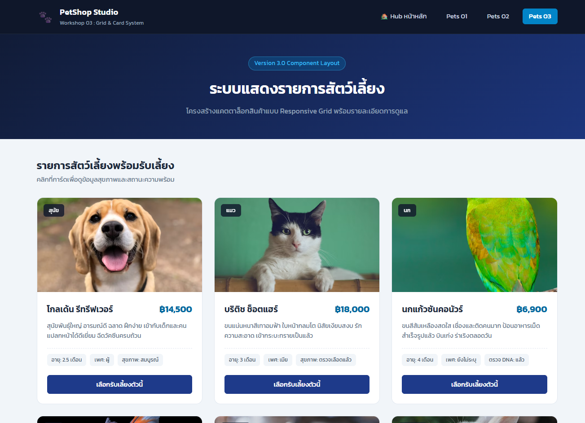
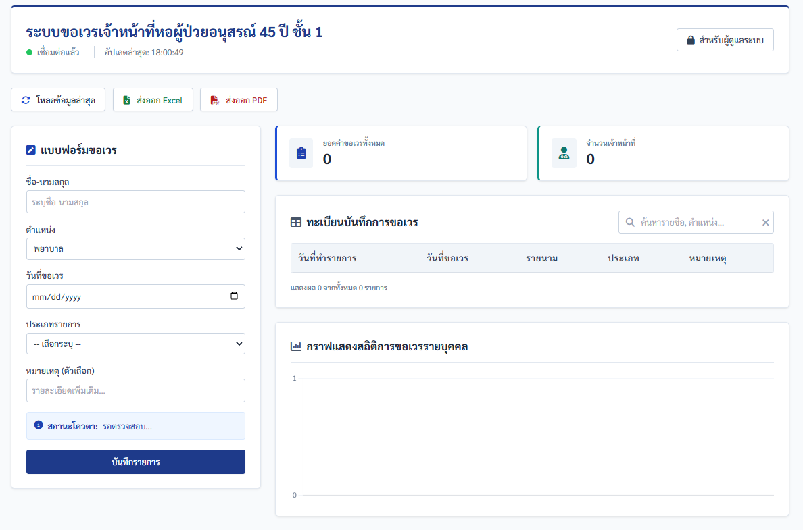
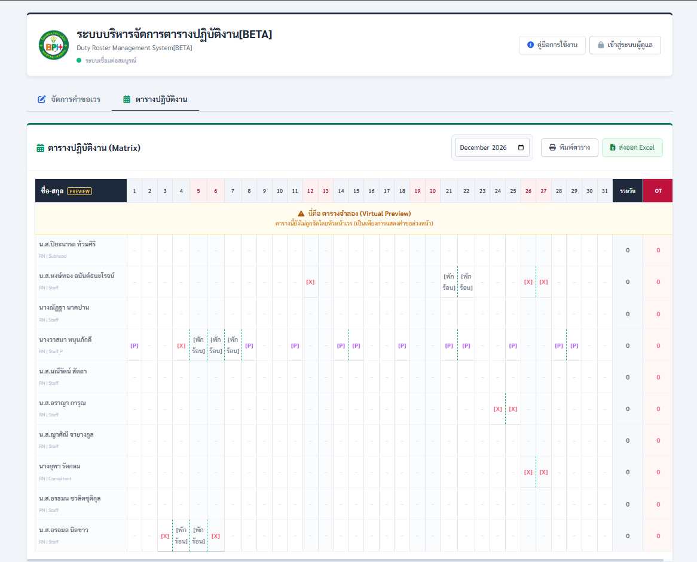

รวบรวมผลงานแบบฝึกหัดในรายวิชาเรียน และโปรเจกต์การพัฒนาเว็บแอปพลิเคชันสำหรับใช้งานจริง

1. ระบบแสดงรายการสัตว์เลี้ยง
คำอธิบายผลงาน: เว็บไซต์แสดงข้อมูลสัตว์เลี้ยงแยกหมวดหมู่ (สุนัข, แมว, นก, ปลา, สัตว์เลี้ยงขนาดเล็ก) พัฒนาขึ้นในรายวิชาการพัฒนาเว็บไซต์เพื่อฝึกปฏิบัติการสร้างเว็บหลายหน้าและการจัด Layout ด้วย CSS
เครื่องมือและเทคโนโลยีที่ใช้:
- โครงสร้างหน้าเว็บ: HTML5 (Semantic Elements)
- การจัดรูปแบบ: External CSS (CSS Box Model, Flexbox)
- เครื่องมือพัฒนา: Visual Studio Code
- การจัดการเวอร์ชัน: Git & GitHub (GitHub Pages)
ดูผลงาน

2. ระบบขอเวรเจ้าหน้าที่พยาบาล
คำอธิบายผลงาน: เว็บแอปพลิเคชันรูปแบบ Single Page Application (SPA) สำหรับให้เจ้าหน้าที่พยาบาลส่งคำขอเวรและวันหยุดรายเดือน มีระบบตรวจสอบโควตาคงเหลือรายบุคคล และติดตามสถานะคำขอแบบเรียลไทม์
หน้าที่รับผิดชอบ: พัฒนาระบบเองทั้งหมดทุกส่วน (Frontend, ลอจิกตรวจสอบโควตา และเชื่อมต่อฐานข้อมูล)
เครื่องมือและเทคโนโลยีที่ใช้:
- Frontend: HTML5, Vanilla JavaScript (DOM Manipulation)
- CSS Framework: Tailwind CSS
- Libraries: SweetAlert2 (หน้าต่างแจ้งเตือนแบบ Pop-up)
- Backend: Google Apps Script (ประมวลผลลอจิกโควตา)
- Database: Google Sheets
- การออกแบบระบบ: เอกสาร SRS, Use Case & Class Diagram
ดูผลงาน

3. ระบบขอเวรและจัดตารางเวรเจ้าหน้าที่พยาบาล
คำอธิบายผลงาน: ระบบบริหารจัดการตารางเวรรายเดือนแบบรวม แสดงภาพรวมเวร (เช้า-บ่าย-ดึก) ของเจ้าหน้าที่ทุกคนในรูปแบบปฏิทินรายเดือน มีระบบตรวจสอบเงื่อนไขความล้าของพยาบาล
หน้าที่รับผิดชอบ: พัฒนาระบบเองทั้งหมด (อัลกอริทึมจัดตารางเวร, ระบบ Export ข้อมูล และย้ายระบบฐานข้อมูลสู่ Supabase)
เครื่องมือและเทคโนโลยีที่ใช้:
- Frontend: HTML5, Vanilla JavaScript
- CSS Framework: Tailwind CSS
- Libraries:
- SweetAlert2 (ระบบแจ้งเตือน)
- Chart.js (แสดงกราฟสรุปยอดเวร)
- SheetJS (ส่งออกไฟล์ Excel)
- jsPDF (ส่งออกตารางเวรเป็น PDF)
- Backend & Logic: Google Apps Script
- Database: Supabase (PostgreSQL) / Google Sheets
- เครื่องมือและการควบคุม: VS Code, Git & GitHub
ดูผลงาน